„Overal nosíme od tří měsíců a teď v deseti pořád sedí. Manžety jsme rozložili teprve minulý týden.“
T
Tereza, Brno
Ověřený nákup
Vyrobeno v Česku. Inspirováno Severem. Dlouhé manžety, které se ohrnou a zase rozloží, takže jeden overal vydrží zhruba rok.
Rukávy i nohavice mají dlouhé žebrované manžety. Dokud je dítě malé, nosí je ohrnuté. Jak roste, manžety rozložíte a overal sedí dál.
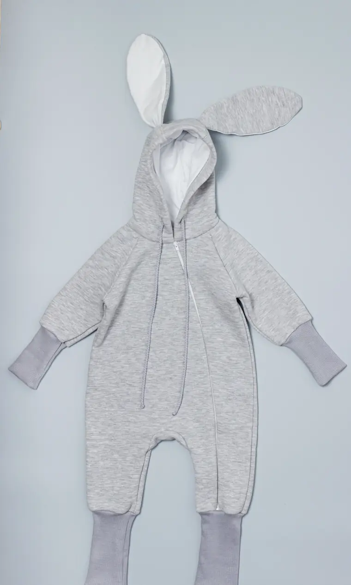
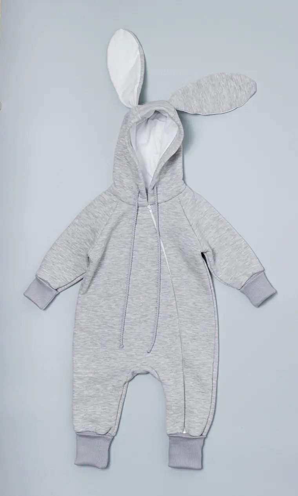
Ohrnuto RozloženoTáhněte a porovnejte
Zatím dva kousky. Každý promyšlený do posledního švu.
Na posteli, na zemi, na tátových ramenou. Oblečení, ve kterém se dá všechno.
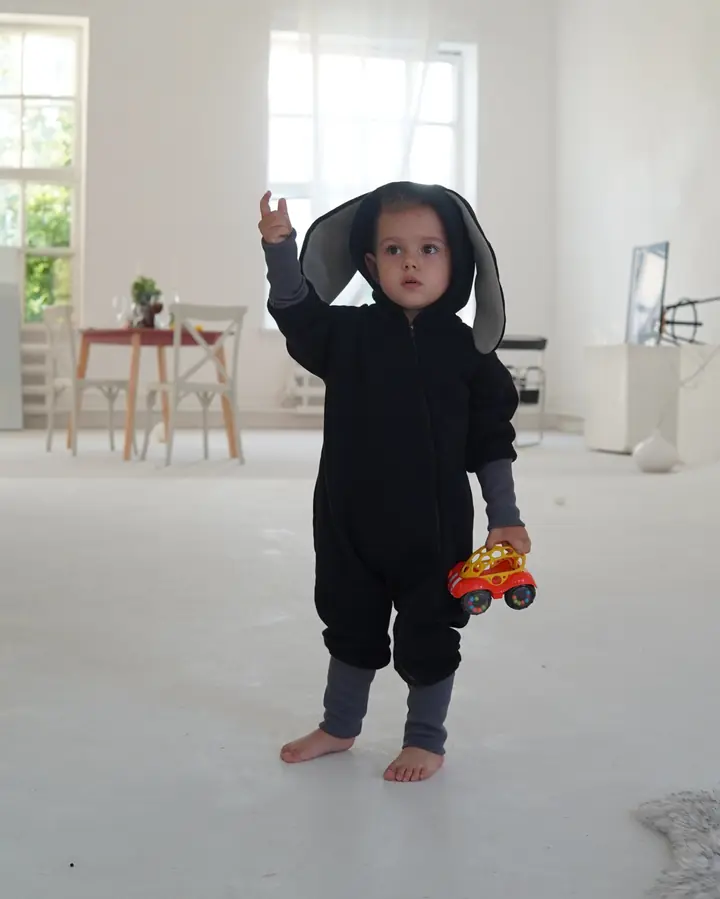
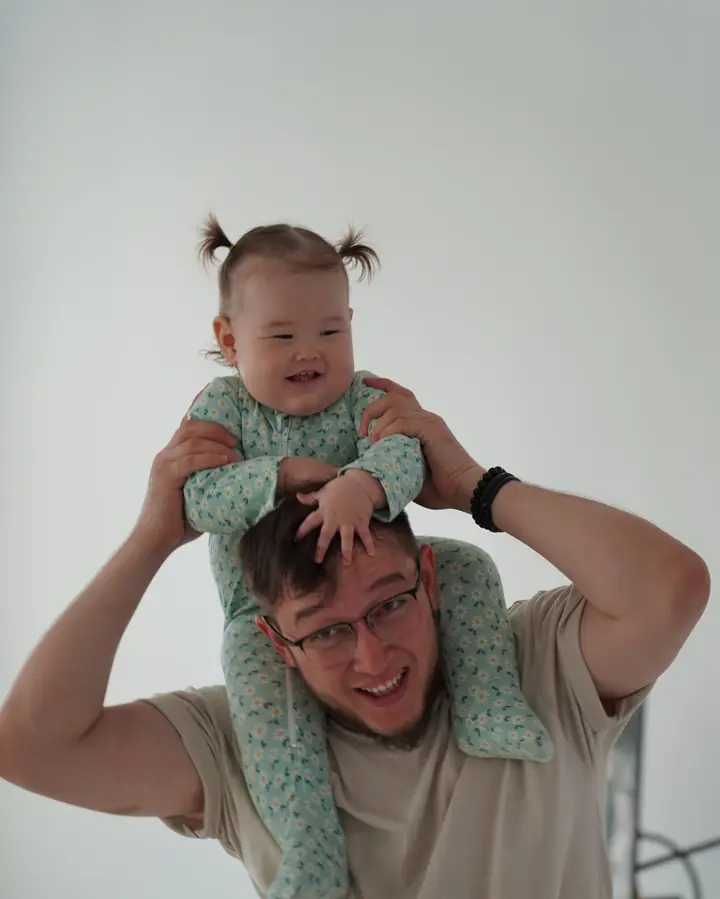
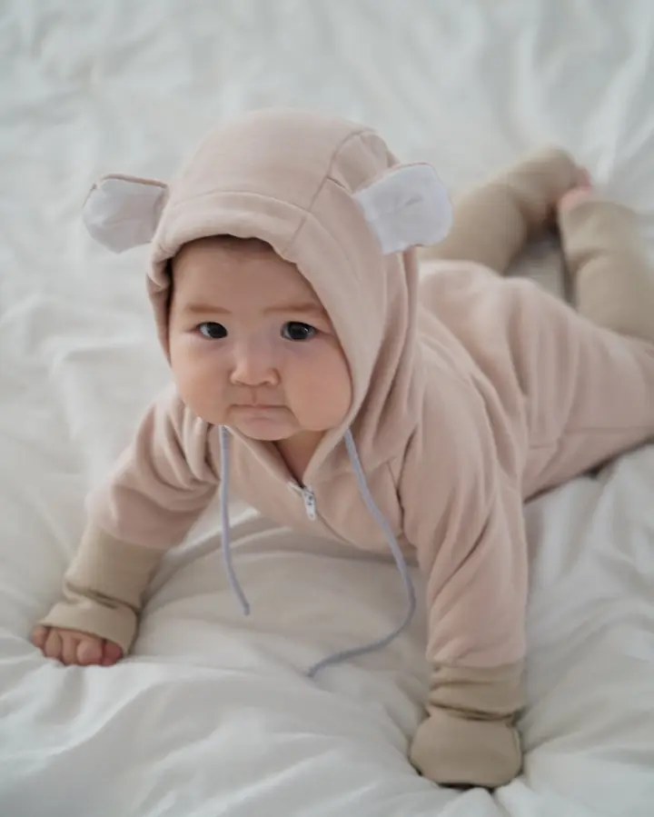
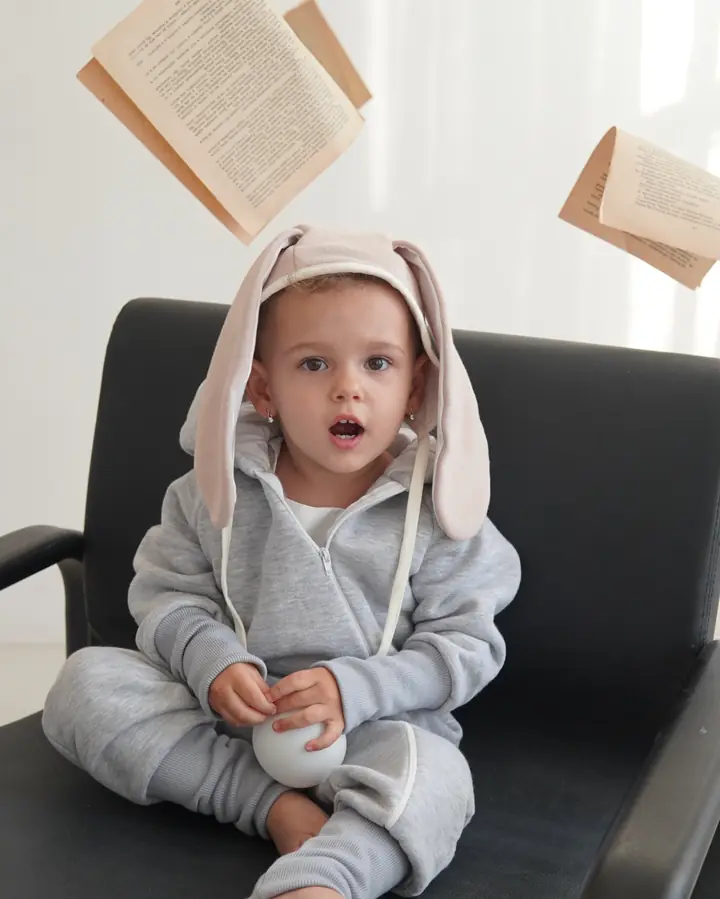
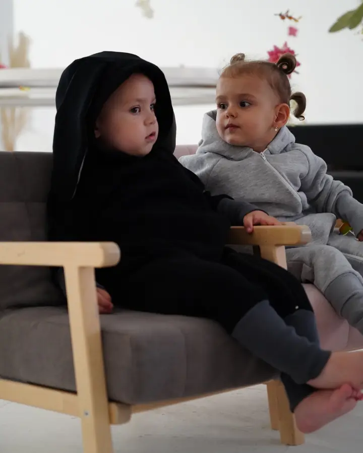
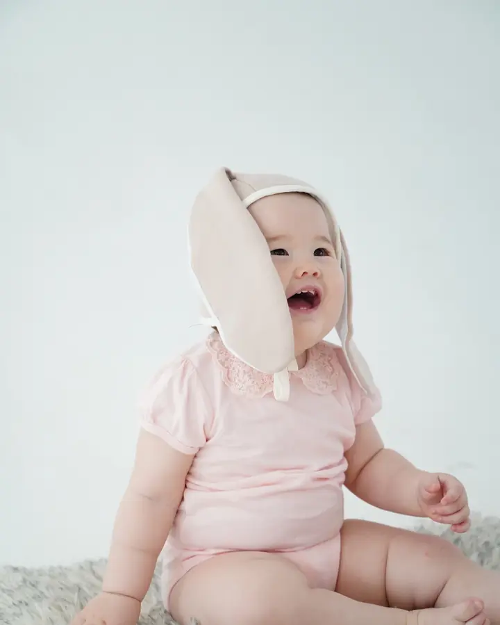
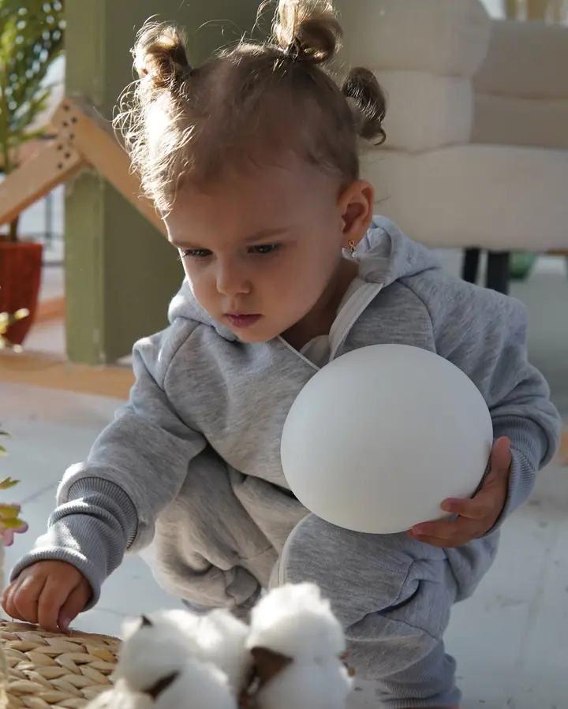
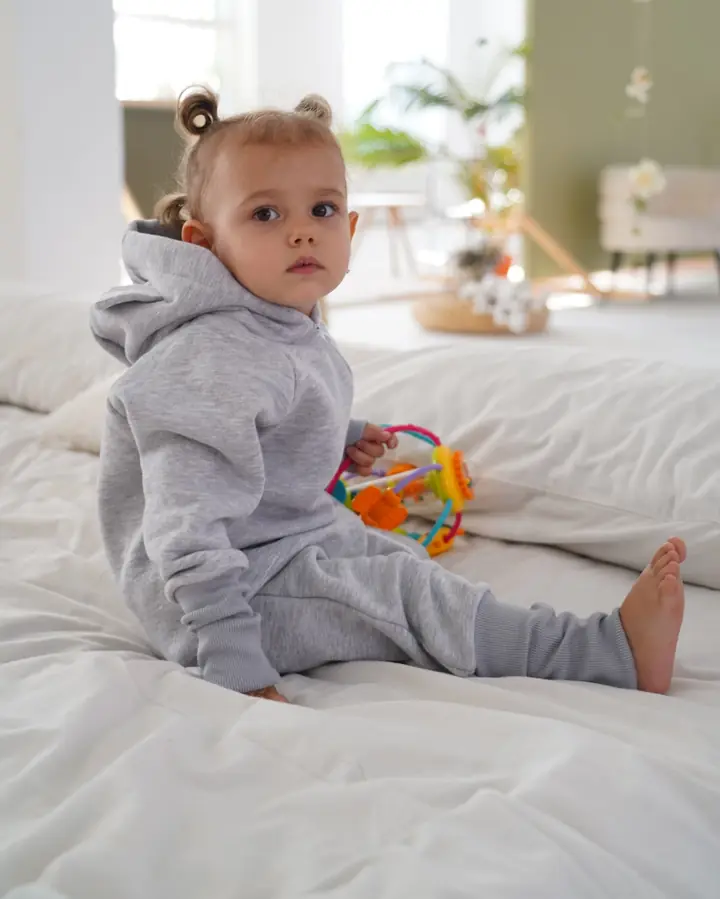
Vyrobeno v Česku. Inspirováno Severem. Navrženo tak, aby rostlo s vaším dítětem.
Šijeme v malé dílně u nás. Víme, kdo každý overal ušil, a látky vybíráme tak, aby vydržely víc než jedno dítě.
Čisté střihy, tlumené barvy a funkce na prvním místě. Žádné nápisy ani zbytečné ozdoby.
Díky dlouhým žebrovaným manžetám vydrží overal zhruba rok. Méně nakupování, méně oblečení ve skříni.
„Overal nosíme od tří měsíců a teď v deseti pořád sedí. Manžety jsme rozložili teprve minulý týden.“
„Konečně dětské oblečení bez medvídků a nápisů. Jednoduché, krásně ušité.“
„Zip jde přes celou nohavici, takže přebalování je rychlé i ve tři ráno.“
„Kupovala jsem novorozenecký set jako dárek. Čepička ze stejné látky je k sežrání.“
„Látka je měkká a přitom pevná. Mladší sestra ho po bráchovi určitě zdědí.“
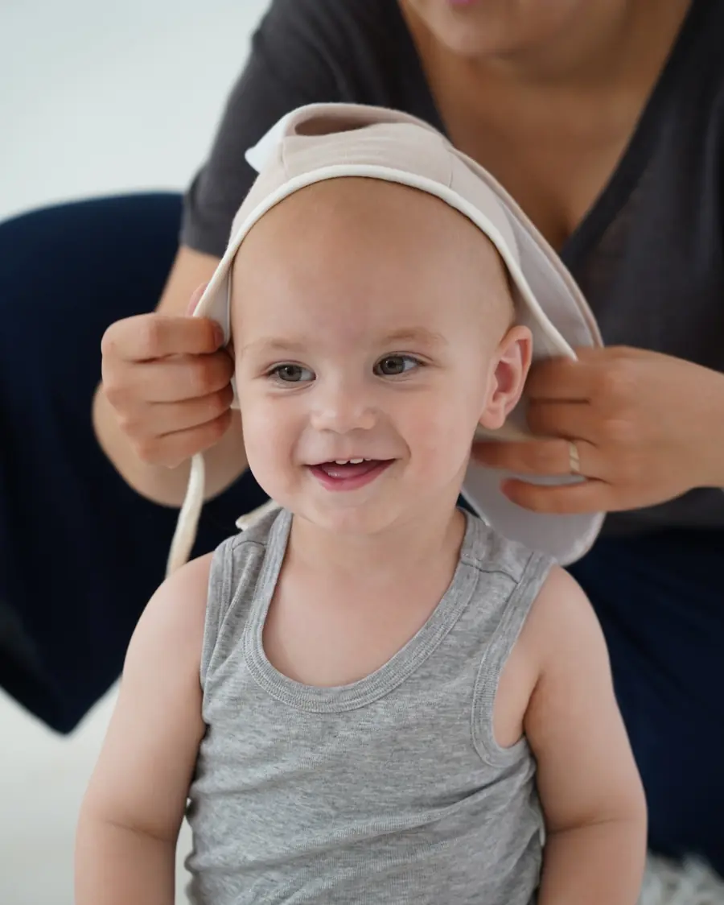
Dětské oblečení se kupuje na pár týdnů. Pak je malé a končí v krabici. Chtěla jsem to udělat jinak.
POIKKA navrhuje kousky, které se přizpůsobí dítěti, ne naopak. Inspiruje se severskou jednoduchostí: dobrá látka, čistý střih a detaily, které ocení každý rodič při přebalování. Všechno šijeme v Česku, v malých sériích.
Kupovat méně a nosit déle pro nás není slogan. Je to důvod, proč overal vůbec existuje.
Přibližně rok, záleží na tom, jak rychle dítě roste. Dokud je malé, nosí manžety ohrnuté, později je rozložíte.
Vycházejte z aktuální výšky dítěte. Pokud je mezi velikostmi, vezměte větší a manžety ohrňte. U produktu najdete tabulku i jednoduchou kalkulačku.
Overal je z teplákoviny s kapucí podšitou jemným úpletem, dupačky z měkkého úpletu. Přesné složení najdete u každého produktu.
Na 30 °C, naruby a se zapnutým zipem. Nesušte v sušičce, overal si tak zachová tvar i barvu.
Odesíláme do dvou pracovních dnů. Vybrat si můžete Zásilkovnu, PPL nebo osobní odběr.
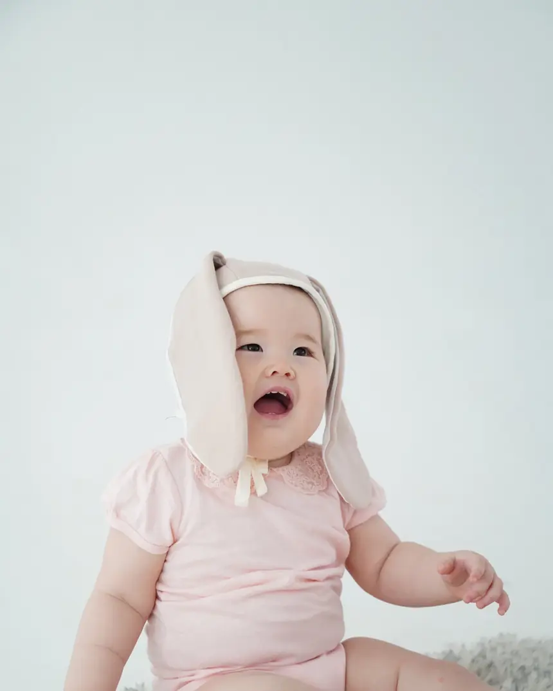
Jednou za měsíc pošleme novinky, nové barvy a tipy, jak oblékat miminko podle počasí. Nic víc.
Odhlásit se můžete jedním kliknutím.